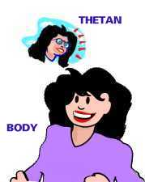

|
|
ARC and Scales |
|
|
ARC and Scales |
ARC: Affinity, Reality, Communication= ARC = Understanding.
SCALE: A graduated thing. Something with many small steps.
This chapter will teach you some basic data to help you observe your pc and his condition. It will help you build up a positive relationship and enough understanding with him to make auditing work. This information will also be very useful in your own life.
Much of these data are covered in R. Hubbard's books - such as: Fundamentals of Thought, Self Analysis and Dianetics™ 55!.
Bear with us, if you find we are going over things you already know. What we bring here in this manual has direct relevance to TRs, auditing and handling your pc.
When we are talking about communication and drilling the TRs we are actually talking about one corner of a triangle called the ARC Triangle.
Here we will here explain the ARC triangle in depth and go over a number of scales (in this and next chapter) that show the pc's mental and emotional state, something you will have to develop an understanding of and new sensitivity for as an auditor.
What is a PC?
When we talk about the pc we may mean Joe or Mary-Ann or whoever is sitting
in the pc chair. If we look at it very closely we mean the person's personality
as separate from his or her physical appearance.
If we look at it even closer, we are talking about his
own good self and not how he may react due to his Reactive Bank or upsetting
things in his life. We are talking about the person's spiritual self, the
thetan.
We have the thetan defined as the spirit, the "I", and the core
personality of an individual.
 |
The Thetan is |
THETAN: From THETA (life static), a word taken from the Greek symbol or letter 'theta', traditional symbol for thought or spirit. The thetan is the individual himself - not the body or the mind. The thetan is the "I"; one doesn't have or own a thetan; one is a thetan. It's his "real Me".
Theta: The thetan produces a type of energy. We call this energy for theta. Theta defined as thought, or the thought energy the thetan produces.
In his writing R. Hubbard furthermore gives these important definitions about what theta consists of:
"The component parts of theta are affinity, reality, and communication."
The same is true for understanding: "Understanding is composed of affinity, reality, and communication."
So, when we talk about ARC and the ARC triangle, we are actually talking about the life force itself and its manifestations.
Theta and understanding are one and the same thing!
This is actually easy to demonstrate.
Any time you feel another understands you, your free theta increases and you go up the tone scale.
Increasing understanding and increasing theta result in the same: a rise on the tone scale.
In order to feel the other has understood you,
must know he listened to you (that's communication).
Then you needed a sign from your partner to show that he got what you had in
mind (you transmitted your reality successfully).
You must feel comfortable with him and well-liked (that's affinity).
When you have had such a conversation you feel relieved and happy.
Maybe you came up-tone from grief to anger regarding the thing you felt troubled by (which is quite an improvement!).
In order to increase your theta you could do "something nice and relaxing" for yourself.
Let us say you have had terrible day in the office and are all upset about it. On the way home you decide you "need a break".
You take a walk in the park. That will get your spirits
or tone up. You communicate with trees and plants, feel in agreement with them
and appreciate them. This increases your ARC in general.
Result: Your day at the office has lost its sting; it has become unimportant and
trivial.
Conclusion: You do not have to be in touch with people in order to regain your balance. How you build up your theta is of no importance. Building it up by watching nature is valid (you can do it also by completing outstanding actions, or by helping another, and so on). As long as there is an increase in communication, reality, and affinity, you will eventually feel better.
An understanding person could be described as "thetaful". Lots of ARC. "She has a lot of love to give, a lot of free theta to spend, a lot of spare attention for everyone". Such a person will not have much trouble in life. She may never be terribly successful in terms of rank and status, yet she will be well liked and have great peace of mind.
This quality was not given to her as a birthright. It is something she creates causatively by using affinity, reality and communication.
‘Affinity, reality and communication co-exist in a close relationship... None can be increased without increasing the other two and none can be decreased without decreasing the other two."
They are side by side in a triangular relationship. There are always the three of them. They influence each other, no matter which one you work on.
You talk to someone about the weather (comm), you come to an agreement that this summer isn't really worth remembering (reality), you begin to think he's a friendly person (affinity).
Or: You ask your neighbor's little son, who is very shy, about his new bike (reality). He'll bubble over with pride and excitement about it (comm). You tell him you wished you'd had a bike like his, when you were his age (agreement/reality). He'll like you better from now on and be less shy (affinity).
Or: you pat your dog (affinity). He'll jump up and bark at you playfully (comm). You pick up the idea from him and take him for a walk (reality).
This, then, is the "ARC triangle". By increasing or decreasing ARC you can increase or reduce understanding. It all depends on your intentions.
ARC, understanding, and theta all mean the same, as it turns out.
They don't exist without the thetan (the spirit or "I"). It follows that the thetan himself produces the theta he works with.
Let us now look at the definitions of A and R and C separately and add some depth to the definitions.
AFFINITY
R. Hubbard defines affinity in terms of reaching or distance. One reaches for something in order to have it close to one. Lack of affinity would be expressed in a withdrawal.
"Affinity is a phenomenon of space in that it expresses the willingness to occupy the same place as the thing which is loved or liked. The reverse of it would be antipathy (dislike)... which would be the unwillingness to occupy the same space as or the unwillingness to approach something or someone".
It follows that the "mental space" of someone widens with the amount of things or people he loves. It follows as well that someone high on the tone scale, having a lot of affinity, finds it easy to include a lot of things or people in his space. He manages to look at life from other viewpoints as well as his own. That's a true sign of affinity. He is able "to put himself in someone else's shoes" and look at things from their point of view.
Put in more technical terms: he can assume the beingness of another; the other person's role or identity.
This doesn't refer to people only but to all things alive or dead, such as plants and stones. Given enough affinity, you can deliberately "become them". This is so because the thetan is not part of the physical universe but places himself in the physical universe wherever he considers it useful or pleasant to do so (Axiom 44, 45).
Usually you have your viewpoint stably anchored inside your head.
Yet, at the same time some people are capable of putting a viewpoint into a withering plant on the table, and "wander around inside it" to find out what's wrong with it. The person has, for a moment, assumed the beingness of this plant.
"Coincidence (sameness) of location and beingness is the ultimate in affinity".
There are many ways to assume a beingness, to be in the space of another or have another be in one's space.
There is (once again) a whole scale to it, paralleling the tone scale:
The "Know-to-Mystery Scale".
This scale is basically an Affinity scale.
Affinity, Space, and Beingness are related concepts. Assuming the beingness of
another or sharing his space expresses a degree of Affinity. The degree form the
following scale. This may be done:
by knowing,
by looking,
by emotional tuning-in.
Beingness can be assumed:
by effort,
by intellectual figuring,
in symbolic form,
by eating,
by sex,
or by mystery rites.
(these are the steps on the scale).
Examples: An artist gets into the spirit of things and expresses it by dance, painting, or music (know, look, emotion). A hunter shoots his lion to share the same space with him; a cannibal eats his victim's brains to assume his beingness; sex orgies serve to be "close to each other" - at least physically. The further you get down on this scale the more solid the means become to attain the end of tuning into or assuming someone's beingness. Instead of theta, physical things are used.
REALITY
Reality is not looked on
as "objective" by R. Hubbard.
It is certainly observable, but not necessarily objective.
Each observer takes his own viewpoint, in both senses of the word:
a) Mentally speaking, he sees things through the filter of his own attitudes and considerations, and with the amount of affinity he happens to have at the time (someone, who is sad and griefy makes a bad observer).
b) Physically speaking, each observer stands in a different location from the other and therefore has a different angle of view. Therefore each observation, to start with, exists for each observer individually only. It is actually in his mind. This is named an actuality.
As soon as the observers share their observations
and come to an agreement with each other, there is "reality" in
the full sense of the word:
‘An actuality can exist for one individually, but when it is agreed with by
others it can then said to be a reality."
This does not exclude that you might disagree with yourself occasionally. Off and on "one doesn't trust one's own eyes", as we all know. So even for yourself, you sometimes have to work out what is real and what isn't.
Reality changes can easily be brought about by drugs and hypnosis, even by mere physical threats and violence. You can beat somebody's own reality out of him and make him agree to yours. He'll do it because he wants to live. This is the way robots are made. In any case, when we talk about reality, we talk about agreement.
"Reality is the agreement upon perceptions and data in the physical universe. (All we can be sure is real is that on which we have agreed is real. Agreement is the essence of reality. (0-8)
But just because a few people have agreed on something does not necessarily mean that it is "truly so". Who would determine that anyway?
Ask some other people and you're bound to find a different agreement on the same matter. Reality is therefore
"the agreed-upon apparency of existence" (Axiom 26).
It's only an apparency. It may look solid one day; it may change the next. You never can tell. Even our scientific description of the physical universe is only one way of coming to an agreement concerning it.
Cross-cultural studies (particularly in the field of medicine) show that other agreements are possible and when acted upon, bring results, too.

COMMUNICATION
"Communication is the interchange of perception through the material universe between organisms or the perception of the material universe by sense channels" (0-8).
Simply put: just by perceiving and sensing something you are already involved with communication and - thereby - with the ARC triangle.
The perceptions, such as sight, sound, smell, taste, are real or not to the extent that one can agree with them or not.
Perceptions which you can agree with and approve of to some extent, and which happen to be inside your scope of activity or survival efforts, will have your affinity. Other perceptions, outside your scope of survival or against it, may be harder for you to accept as real but you surely won't like them. When too rough, you may not even "see" them at all: no communication, apathy.
The use of the term "interchange" in the quotation above shows that there are two terminals involved in a cycle of communication. "Terminal" means in Scn language "the end point of a communication line".
There are two end points or terminals (typically persons) in a communication: a source-point and a receipt-point.
Thus the definition of communication looks like this:
"Communication is the consideration and action of impelling an impulse or particle from source-point across a distance to receipt-point, with the intention of bringing into being at the receipt-point a duplication and understanding of that which emanated from the source point" (Axiom 28).
'Duplication' in the above means: seeing a thing exactly as it is - without any distortions, without adding to it or subtracting from it. Duplication refers to the communication-part of the ARC triangle. When the particle received is a perfect duplicate of the particle sent, we would have the ideal outcome of a communication.
'Understanding' means: fitting what you receive into the data you already know, by doing comparisons, etc.
From the definition above the communication formula is derived:
"Cause, distance, effect, with intention, attention, duplication, and understanding".
It's a formula in the same sense as a "recipe or prescription". When you mix the ingredients in the formula you get communication. If you leave one ingredient out, it won't be real communication.
With the above, one important aspect of an auditing session has been described: the preclear makes himself receipt point of the energy impulses and mass particles which emanate from his mental ridges or his Bank. He duplicates and understands them one by one until all the information contained in the pictures have been fully included in his space. Now the pictures will vanish. They won't have a compulsive influence on the pc any longer. If he wants to, he can re-create the information at will (he can still remember it analytically). But there won't be any compulsion to re-create it.
Observing the ARC triangle in session, one usually finds the pc works with it in reverse order (C-R-A) because communication is the dominant part and "the easy way in".
The reason for this is, that the communication formula: Cause, distance, effect with duplication and understanding can be seen to have all the elements of ARC. The affinity part is overcoming the distance and the reality part is the amount of duplication taking place. It results in greater understanding when successful. If not successful it results in lowered understanding. The simple action of communicating causes thus an increase or decrease in ARC.
This is how it goes:
1. The pc goes in communication with the thing (mental picture or other content
in his Bank) by
permitting himself to perceive it.
2. He duplicates its reality until he can agree with the thing being this way
and no other.
3. He admires it (gives it affinity) for being the way it is instead of
resisting it - at which moment its power over him will vanish.
As the pc progresses through his sessions he regains more and more free theta and therefore comes up tone.
Near the end of a longer auditing program he will be strong enough to work with affinity only. He sees the picture, permeates it with his affinity, and instantly picks up its reality.
No drawn-out laborious communication needed. No need to look at it this way and that way until finally the whole thing can be confronted. No! It's one glance and the picture goes up in smoke. This is called "blowing by inspection" (auditor jargon). It means that the pc won't have a long way to go before he is Clear.
( Section on ARC based on L. Kin's work)